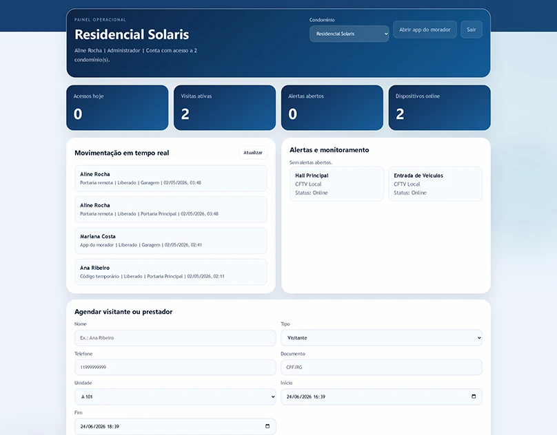
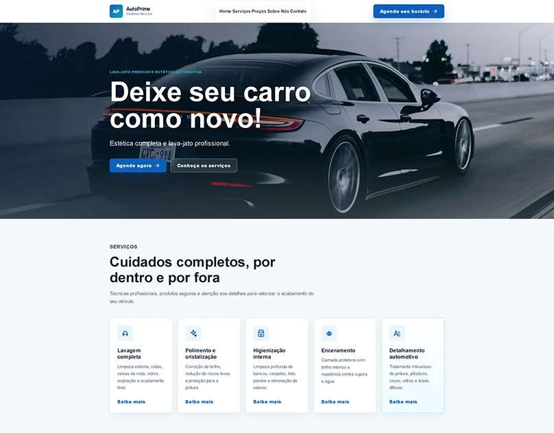
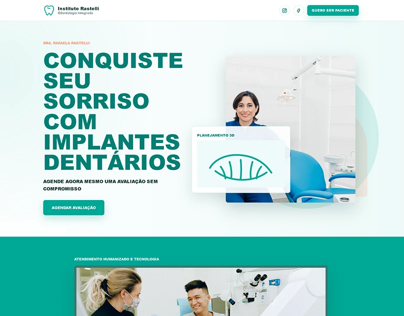
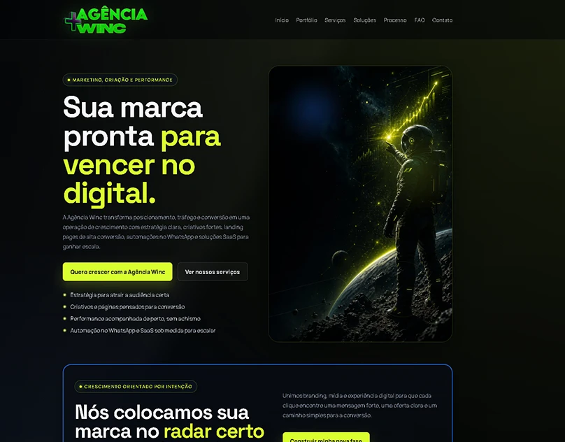
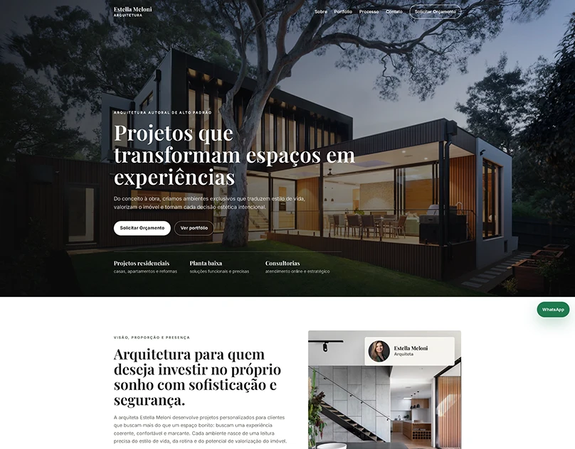
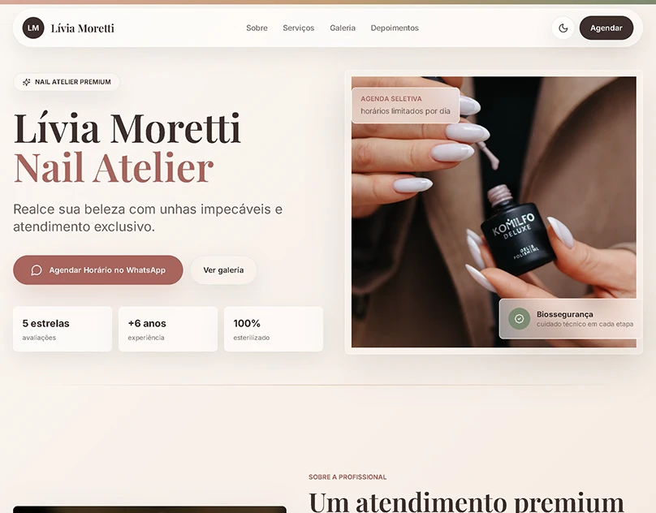

APP Portaria 360
Ver projeto completo no Behance.
Designer e Desenvolvedor Frontend
Atuo entre marca, interface e desenvolvimento frontend — de páginas de conversão objetivas aos produtos operacionais por trás delas.
Projetos selecionados
Interfaces e páginas de conversão selecionadas. As capas e os estudos de caso levam aos trabalhos originais no Behance.
Ver portfólio completo no Behance
Ver projeto completo no Behance.

Ver projeto completo no Behance.

Ver projeto completo no Behance.

Ver projeto completo no Behance.

Ver projeto completo no Behance.

Ver projeto completo no Behance.
Resumo do GitHub
Um retrato de 16 repositórios públicos entre frontend, engenharia de produto, automação e sistemas full-stack.
Ver todos os repositóriosPrincipais tecnologias
Os projetos incluem páginas de conversão, produtos SaaS, painéis, fluxos de automação, comércio eletrônico e plataformas de campanha.
Serviços
Contato